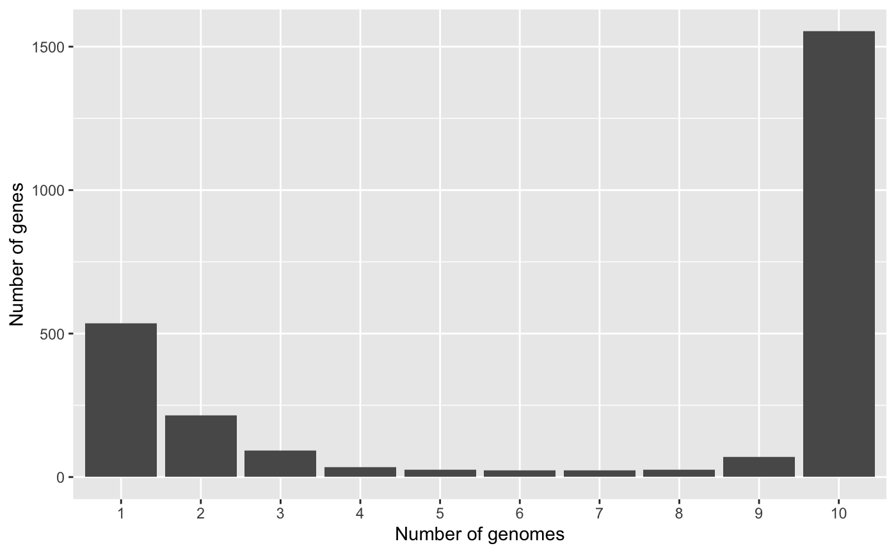

1-Quick_Start.RmdIf you want a very quick look at pagoo and start playing with pangenome objects, this is a short tutorial to show the concept. Let’s start by loading a Campylobacter spp. dataset, included in the package.
library(pagoo, quietly = TRUE, warn.conflicts = FALSE) # Load package
rds <- system.file('extdata', 'campylobacter.RDS', package = 'pagoo')
campy <- load_pangenomeRDS(rds) # Load pangenomeNow that the object (campy) is loaded, we can start by querying it. pagoo was developed considering that in a pangenome each individual gene belongs to a given organism, and is assigned to a cluster of orthologous. So those variables are interconnected, but each of them can have metadata asociated that is specific to each of them, i.e.: an individual gene can have coordinates inside a genome, but this doesn’t apply to a whole cluster, and a given organism has, for instance, a host where it was isolated from, but this information doesn’t apply to an individual gene.
So this 3 variables are 3 separate tables that can be queried:
## DataFrame with 69 rows and 8 columns
## org id strain year country host source
## <factor> <factor> <factor> <integer> <factor> <factor> <factor>
## 1 16244_6_1 FR10 2006/367h 2006 France Human CSF
## 2 16244_6_2 FR11 2006/479h 2006 France Human Feces
## 3 16244_6_3 FR12 2006/588h 2006 France Human CSF
## 4 16244_6_4 FR13 2006/621h 2006 France Human Blood
## 5 16244_6_5 FR14 2006/649h 2006 France Human Feces
## ... ... ... ... ... ... ... ...
## 65 16244_6_32 TR1 CF156 2013 Turkey Human Blood
## 66 17059_2_39 TW3 7035 2004 Taiwan Human Blood
## 67 17059_2_40 TW4 My5726 2006 Taiwan Human Blood
## 68 17059_2_41 TW5 1592 2006 Taiwan Human Blood
## 69 17059_2_42 TW6 1830 2008 Taiwan Human Blood
## accession
## <factor>
## 1 ERS672242
## 2 ERS672243
## 3 ERS672244
## 4 ERS672245
## 5 ERS672246
## ... ...
## 65 ERS672273
## 66 ERS739258
## 67 ERS739259
## 68 ERS739260
## 69 ERS739261(Tip: To see all fields and methods, in any R console type campy$ and press the [TAB] key two times.)
This dataset consist in 69 Campylobacter spp genomes. For each organism, you have a row with associated metadata. The first column, org, indicates the organism.
## DataFrame with 3179 rows and 2 columns
## cluster Pfam_Arch
## <character> <character>
## 1 group0001 2-Hacid_dh_C
## 2 group0002 2-Hacid_dh_C;2-Hacid_dh
## 3 group0003 2-Hacid_dh_C;ACT;2-Hacid_dh
## 4 group0004 2Fe-2S_thioredx
## 5 group0005 4HB_MCP_1
## ... ... ...
## 3175 group3175 zf-RING_7
## 3176 group3176 zf-TFIIB
## 3177 group3177 ZinT
## 3178 group3178 ZnuA
## 3179 group3179 ZT_dimerThe $clusters field returns a table with metadata associated to each group of orthologous, in this case is the Pfam architecture domain (second column).
The last, and most important field is $genes, which returns a list of DataFrame with information given for each individual gene, grouped by cluster. We let the user to inspect this field by him/herself.
The first 3 columns (cluster, org, and gene) are the glue that interconects each of 3 “variables”.
Another useful field is $pan_matrix, which returns a matrix with gene abundance for each cluster (columns), and each organism (rows).
pagoo objects contain basic methods to analyse the pangenome, from general statistics to some basic plotting capabilities. Some of these methods can also take arguments.
For example:
## Mean Std
## 0.09937901 0.02612196Or:

One of the main advantages of using pagoo is the ability to very easily manipulate sequences. This tutorial dataset doesn’t contain sequences, and they are an optional requirement. We strongly recommend to also giving a look to other pagoo tutorials in which sequences are used to understand the potential of using this package to work with pangenomes.